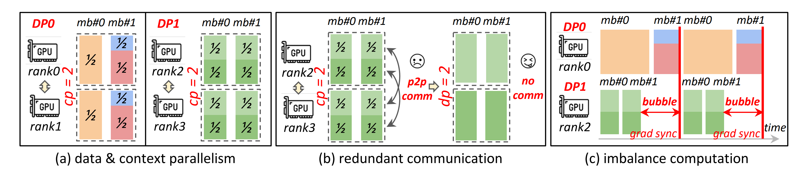
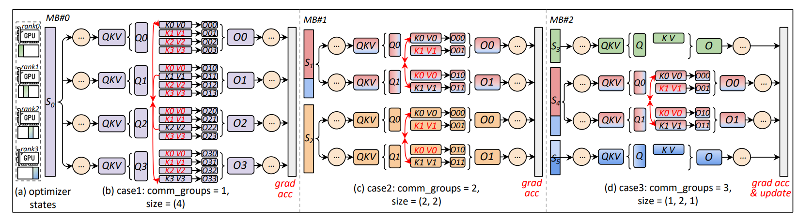

The Load-Balance Problem Behind Hybrid Parallelism
TL;DR: variable sequence length turns hybrid parallelism into a scheduling problem. Megatron Dynamic-CP improves a fixed DPxCP pool by choosing CP size per sequence inside a packed batch, while ByteScale's Hybrid Data Parallelism goes further by scheduling a more flexible rank pool. The main lesson is that DP, CP, and PP cannot be optimized independently once load balance and communication are both in the loop.
1. The 5D Map Is Really a Coupling Map
The axes are not independent knobs. Optimizing one split changes both communication and load balance for the others: a CP split can make one long sample fit, but it can also add P2P traffic; a DP split can add sample throughput, but it can also leave ranks waiting at gradient synchronization; a PP split can turn uneven microbatch runtimes into pipeline bubbles.
This post focuses on the DP+CP part in Megatron Dynamic-CP and ByteScale.
2. What Is Microbatch-Level DP Load Balancing?
For this section and the rest of the post, assume sequence packing is already supported: a microbatch may contain multiple sequences, and the scheduler can see their token lengths rather than only one opaque tensor shape.
The naive way to handle post-training load balance is to ignore CP and only rearrange samples across DP ranks. A simple version sorts samples by token count, or by a cost function derived from token count, then uses a longest-processing-time heuristic: place the next heaviest sample or microbatch on the currently lightest DP rank. This often makes each gradient-accumulation window less skewed because the long samples are spread across ranks instead of clustered.
The constraint is that gradient accumulation still expects the DP ranks to meet at the same synchronization boundary. If rank 0 executes a different number of microbatches from rank 1 before the same gradient update, the forward/backward and communication schedule can diverge. So microbatch-level DP load balancing tries to make each microbatch step have comparable token work across ranks while keeping the same microbatch count per rank.
Slime implements a more practical two-level version for rollout training. Its DP/microbatch scheduler first groups rollout samples into training steps, then packs each step into microbatches by fixed chunking or first-fit token packing. After that, if --balance-data is enabled, it balances the resulting microbatch token sums across DP ranks with the Karmarkar-Karp partitioner while preserving the equal-count invariant. This is smarter than raw sample-level LPT because it balances the units the training loop actually executes, but it still treats CP as a fixed capacity factor rather than choosing a per-sequence local_cp_size.
3. How Megatron Handles This
Megatron's hybrid context parallelism is already a useful step away from a fixed "DP equals N, CP equals M" grid. At initialization it still builds a bounded set of process groups over the DPxCP ranks. At runtime, the scheduler first unpacks the packed batch: a sub-sample is one real sequence segment recovered from the packed tensor using its cumulative sequence lengths. The scheduler then assigns each sub-sample a local_cp_size: short sequences can stay on one rank, while long sequences may occupy 2, 4, 8, or more ranks from the same DPxCP pool.

Figure 3 from the ByteScale paper, showing why fixed DP+CP can create redundant communication for short sequences and imbalance bubbles across DP/PP schedules.
The relevant Megatron code is compact enough to read directly: parallel_state.py creates the bounded hybrid DP-CP process groups, data_schedule.py unpacks and reroutes sub-samples, and hybrid_cp_schedule.py estimates relative attention work as roughly seq_len * seq_len / cp_size, rounds the required CP size to a power of two, and inserts barriers between compatible groups. NVIDIA's Dynamic-CP blog describes the same direction at the system level: a data-iterator wrapper reschedules packed data, selects CP size, returns the effective num_micro_batches, and broadcasts the dynamic packing metadata across pipeline stages.
The PP part is still at the microbatch scheduling level. Dynamic-CP does not add a separate PP parallelism layer; it tries to feed Megatron's existing PP/VPP schedule with better-balanced microbatches and consistent dynamic metadata, so fewer long microbatches block neighboring pipeline stages.
That corrects an easy overstatement: Megatron is not merely "fixed CP for every microbatch." Its hybrid CP path is dynamic over sub-samples inside the current DPxCP scheduling window. The narrower constraint is that the dynamic choice is represented through pre-created power-of-two CP groups, while the rest of the stack still has to preserve common loss scaling, gradient synchronization, and pipeline execution semantics.
4. What ByteScale Adds Beyond Megatron Hybrid CP
A caveat first: ByteScale does not appear to have an open-source training implementation, so this comparison is based on the paper's design description rather than code-level verification.
The most important difference is scheduling scope. Megatron Dynamic-CP already goes beyond a fixed microbatch shape: the NVIDIA blog says the effective num_micro_batches can vary by iteration, PP metadata is broadcast to keep pipeline stages consistent, and a solver can sweep microbatch counts. The remaining structure is still recognizably Megatron: all DP ranks are constrained to the same microbatch count in the runtime search, and CP choices come from pre-created power-of-two groups.
ByteScale relaxes that equal-microbatch-count assumption for Hybrid Data Parallel ranks. Its balance scheduler assigns more sequences to ranks or pipelines with shorter estimated execution time, while preserving equivalence through gradients accumulated over all tokens in the global batch. The paper separates this into DP-Balance and PP-Balance: DP-Balance targets per-time-step load balance across HDP ranks, while PP-Balance also orders length buckets so neighboring pipeline stages see more compatible microbatch runtimes. So the benefit is not only "less PP bubble"; it is a broader DP+CP load-balance scheduler with a PP-aware mode. That is also why it is hard to retrofit into a Megatron/FSDP-style stack: scheduler state, loss normalization, gradient sync boundaries, FSDP unshard/reshard timing, and PP scheduling all have to agree on the same per-iteration plan.

Figure 8 from the ByteScale paper, illustrating the Hybrid Data Parallel view after replacing the fixed DP+CP grid.
The paper also claims a more flexible rank-assignment and communication model: a sequence may use any number of ranks in [1, d_hdp], with P2P only among the ranks that participate in that sequence. I keep this compact because the training implementation is not open source; the paper also discusses selective activation offloading and PP bubble reduction, and is the better reference for those details.
5. Final Thought
Hybrid parallelism is not "the more axes, the better." The obvious limit is communication: every new split can add collectives, P2P traffic, metadata, and synchronization points. A parallel axis only helps if the memory or throughput it unlocks is worth that overhead.
The deeper issue is load balance. Adding a dimension blindly can make imbalance worse: short sequences may pay unnecessary CP communication, long sequences may strand DP neighbors, and uneven microbatches may become PP bubbles. Adding a dimension intelligently can do the opposite: it gives the scheduler another way to place work so ranks finish closer together.
So the useful mental model is not orthogonal DP, CP, and PP knobs. It is one per-iteration execution plan: which tokens go to which ranks, which ranks communicate, when gradients synchronize, and whether the plan preserves the same global-batch gradient meaning.
References
ByteScale: Efficient Scaling of LLM Training with a 2048K Context Length on More Than 12000 GPUs